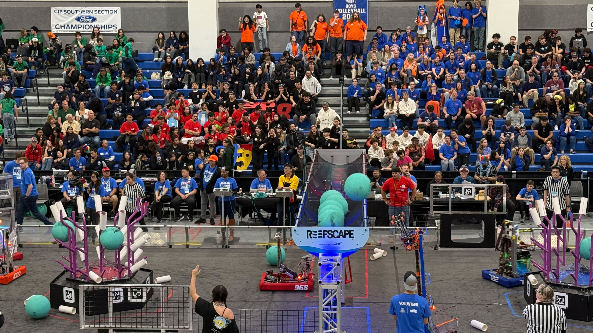

The FIRST Tech Challenge (FTC) is a global competition for students in middle and high school. It is by far the most popular robotics competition for students, with over 8000 teams with 8 to 12 students per team. The seasons run during the school year, and consist of meets, where teams compete in a season-specific challenge. This year, the competition is BIOBUZZ, with teams using pollen and nectar to tip hives and score flowers.